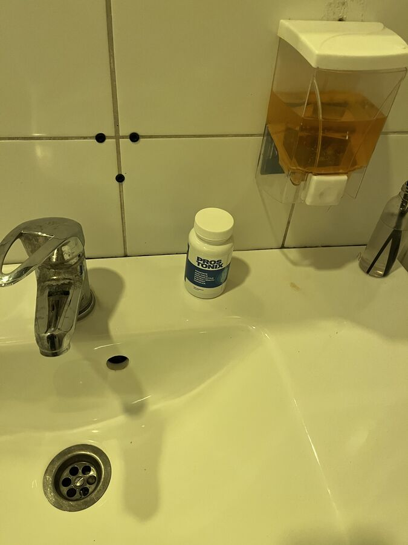

Στο Ισραήλ, χάρη σε μια ειδική μέθοδο, οι άνδρες μπορούν να
θεραπεύσουν μια για πάντα την προστατίτιδα σε 2-3 εβδομάδες.
(η μέθοδος περιγράφεται παρακάτω)
Εν τω μεταξύ, στην Ελλάδα, οι άπληστοι γιατροί μαζί με φαρμακεία κρατάνε μυστικά τα προϊόντα που είναι αποτελεσματικά, αναγκάζοντας τους άντρες να αγοράζουν συνέχεια πολύ ακριβά φάρμακα και να κάνουν θεραπεία! (για να μάθετε πώς να βρείτε αυτό το προϊόντα και πού είναι διαθέσιμο, διαβάστε προσεκτικά το παρακάτω άρθρο)
Η προστατίτιδα είναι η πιο διαδεδομένη ασθένεια μεταξύ ανδρών άνω των 40 ετών, εκτός αυτού, οι γιατροί τα τελευταία χρόνια έχουν παρατηρήσει μια δυσάρεστη τάση, σύμφωνα με την οποία η ασθένεια εμφανίζεται σε όλο και πιο νέους ανθρώπους. Άνδρες ηλικίας 30, 25 και ακόμη και 20 ετών χρονών συχνά απευθύνονται σε γιατρούς.
Η ασθένεια προκαλείται από τις ακόλουθες συνήθειες και συμπεριφορές
- καθιστική ζωή
- έλλειψη τακτικού σεξ
- σεξουαλικά μεταδιδόμενες λοιμώξεις
- κληρονομική προδιάθεση
- στρες και ασθένειες του ουρογεννητικού συστήματος
- αδύναμη ανοσία
Στον σύγχρονο κόσμο, είναι πολύ εύκολο να αντιμετωπίσετε προβλήματα με τον προστάτη αδένα. Κάποιος τα έχει στα 25, κάποιος στα 45, είναι θέμα χρόνου.
Κάντε εξέταση για να δείτε εάν έχετε συμπτώματα προστατίτιδας:
Το , το Τμήμα Ουρολογίας δημοσίευσε τρομακτικά στατιστικά στοιχεία: περισσότερο από το 72% των ανδρών άνω των 37 ετών έχουν προβλήματα με το αδένα του προστάτη αδένα. Είναι πολύ απλό το να δει κανείς εάν έχει προστατίτιδα. Δεν χρειάζεται να είσαι κανείς γιατρός. Τα περισσότερα από τα συμπτώματά της έχουν ιδιαίτερα χαρακτηριστικά:
-
Βασανιστικός πόνος:
- στην κάτω κοιλιακή χώρα, στο όσχεο;
- στο περίνεο ή στο πέος;
-
Διαταραχές της ούρησης:
- συχνή ούρηση, κάψιμο στην ουρήθρα;
- αίσθηση μη εντελώς άδειας ουροδόχου κύστης";
- δυσκολία στην ούρηση (αδύναμη ροή);
-
Σεξουαλική δυσλειτουργία:
- μειωμένη σεξουαλική επιθυμία;
- μειωμένης διάρκειας και αδύναμη στύση;
-
Διαταραχή εκσπερμάτισης:
- πρόωρη εκσπερμάτιση ή δυσκολία στο να επιτευχθεί;
- αδύναμη εκσπερμάτιση.
Εκτός από την αυξημένη κόπωση, την ευερεθιστότητα του σώματος και την αδύναμη ανοσία.
Παρά την προφανή πτώση της ποιότητας ζωής, πολλοί άνδρες ζουν χρόνια με την προστατίτιδα, αγνοώντας τις μη αναστρέψιμες συνέπειες ότι οι ενοχλήσεις μπορεί να φαίνεται λίγο πολύ συμβατές με τη ζωή.
Η προστατίτιδα που δεν έχει
θεραπευτεί οδηγεί πάντα σε
αδένωμα του προστάτη ("θάνατος" για τους άντρες)
Εν μέρει, μπορούμε να κατανοήσουμε αυτούς τους άντρες, επειδή η διάγνωση της προστατίτιδας προκαλεί σε κάθε άντρα που καταλαβαίνει την όλη διαδικασία σοβαρή κατάθλιψη και αμηχανία. Επιπλέον, τις περισσότερες φορές, μετά τη διάγνωση της προστατίτιδας, οι επισκέψεις κάθε χρόνο σε ουρολόγους μοιάζουν με υποταγή. Οι γιατροί ανακουφίζουν τα πιο οξεία συμπτώματα με τη βοήθεια φαρμάκων "συνιστώνται από τους φαρμακοποιούς", αλλά εάν δεν ακολουθήσετε τις οδηγίες για μικρό χρονικό διάστημα, η προστατίτιδα "επανεμφανίζεται".
Πώς αντιμετωπίζεται η προστατίτιδα (και πώς ΔΕΝ ΠΡΕΠΕΙ να αντιμετωπίζεται)
Το πιο θλιβερό είναι ότι δεν μπορείτε να απαλλαγείτε εύκολα από την προστατίτιδα, ακόμα κι αν το θέλετε πραγματικά.
Τυπική θεραπεία της προστατίτιδας:
Είτε πηγαίνετε σε κλινική είτε σε ιδιωτικό γιατρό, δεν έχει σημασία, γιατί έτσι και αλλιώς πρέπει να πληρώσετε.
Ο γιατρός σας εξετάζει, σας στέλνει σε διάφορους ειδικούς. Μερικοί δεν χρειάζονται καν, αλλά τυχόν εμφανιστεί κάτι άλλο που χρειάζεται θεραπεία. Καθένας από τους ειδικούς πληρώνεται ξεχωριστά.
Μετά την εξέταση, ο γιατρός κάνει διάγνωση "προστατίτιδα" και συνταγογραφεί "συνιστώμενα φάρμακα". Συνταγογραφεί φάρμακα με στόχο την ανακούφιση των οξέων συμπτωμάτων της νόσου, αλλά όχι για τη θεραπεία της χρόνιας προστατίτιδας. Και, φυσικά, ο ουρολόγος συνιστά φάρμακα από τις φαρμακευτικές εταιρείες των οποίων οι εκπρόσωποι του έχουν φέρει τα περισσότερα χρήματα. Αυτά τα φάρμακα τα γνωρίζουν όλοι.
Εκτός από τα "συνιστώμενα"φάρμακα για την ανακούφιση των συμπτωμάτων, οι γιατροί συνταγογραφούν πάντα ένα ορθικό μασάζ προστάτη ή θεραπεία με παρόμοιο αποτέλεσμα. Αυτή είναι μια ταπεινωτική και πολύ δυσάρεστη διαδικασία, το μασάζ γίνεται με ένα δάχτυλο που εισάγεται στον πρωκτό. Κατά μέσο όρο, το μασάζ περιλαμβάνει 10-14 επισκέψεις. Φυσικά, θα πρέπει να τις πληρώσετε όλες.
Εκτός από την κύρια θεραπεία, οι γιατροί συχνά συνταγογραφούν φάρμακα για τη βελτίωση των σεξουαλικών λειτουργιών, τη βελτίωση της ποιότητας του σπέρματος, "θεραπεία του οργανισμού" αντιβιοτικά κ.λπ.
Ως αποτέλεσμα, η θεραπεία της προστατίτιδας στην Ελλάδα κοστίζει από 300 έως 1500 ευρώ, οι ουρολόγοι έχουν ουσιαστικά δημιουργήσει έναν κύκλο θεραπείας βασισμένο κυρίως στις οικονομικές δυνατότητες του ασθενούς. Σε αυτήν την περίπτωση, εξαλείφονται μόνο τα κύρια οξέα συμπτώματα της νόσου. Η χρόνια προστατίτιδα θα παραμείνει και θα επανεμφανιστεί μόλις σταματήσετε να ακολουθείτε τους περιορισμούς που έχει βάλει ο γιατρός σας. Κατά συνέπεια, αυτά τα ποσά πρέπει να καταβάλλονται ετησίως, σε αυτό βασίζονται οι φαρμακευτικές εταιρείες.
Πώς αντιμετωπίζεται η προστατίτιδα στο Ισραήλ
Στο Ισραήλ, για τη θεραπεία της προστατίτιδας, δεν χρειάζεται καν να πάτε σε γιατρό. Απλά πρέπει να πάτε στο φαρμακείο όταν εμφανιστούν τα πρώτα συμπτώματα και να αγοράσετε προϊόντα που δεν θα εμφανιστούν στην παγκόσμια αγορά τις προσεχές δεκαετίες μόνο και μόνο επειδή βοηθούν στην πλήρη θεραπεία της χρόνιας προστατίτιδας. (μία για πάντα)! Φυσικά, ένα τέτοιο προϊόν, κατά κανόνα, δεν συμφέρει τη φαρμακευτική μαφία - είναι καλύτερα να υπάρχουν ασθενείς που πρέπει να εξαλείφουν τα συμπτώματα πόνου κάθε χρόνο και να μην αντιμετωπίζουν την ασθένεια με "οικονομικό" προϊόν, το οποίο είναι διαθέσιμο σε όλους. Σε αντίθεση με τη χώρα μας, η ασφάλιση υγείας είναι ιδιαίτερα ανεπτυγμένη στο Ισραήλ. Οι ιατρικές ασφαλιστικές εταιρείες δεν ενδιαφέρονται για τους ασθενείς που επισκέπτονται γιατρούς περισσότερο από 2 φορές το χρόνο, επειδή οι εταιρείες πρέπει να πληρώνουν για όλα αυτά και οι μισθοί των γιατρών είναι αρκετά υψηλοί εκεί. Αντιθέτως, ενδιαφέρονται να κάνουν τη θεραπεία όσο το δυνατόν πιο αποτελεσματική και ταχύτερη.
Στο Ισραήλ, τα συμφέροντα των ασφαλιστικών εταιρειών έχουν νικήσει τη φαρμακευτική μαφία και, ευτυχώς για τους απλούς ανθρώπους, ένα προϊόν για τη θεραπεία της προστατίτιδας είναι πάντα διαθέσιμο στην αγορά...
Θα αλλάξει η κατάσταση στην Ελλάδα προς το καλύτερο;
Δυστυχώς, δεν μπορούμε να περιμένουμε θετικές αλλαγές σε αυτόν τον τομέα, διότι δεν θα το επιτρέψουν οι ευρωπαϊκές φαρμακευτικές εταιρείες που βγάζουν δισεκατομμύρια δολάρια.
Σήμερα, ωστόσο, δεν είναι καθόλου απαραίτητο να αγοράσετε προϊόντα από φαρμακείο. Αυτό μπορεί να γίνει στο Διαδίκτυο σε εξειδικευμένα σάιτ. Πρόσφατα, το Prostonix έγινε ένα από τα πιο αποτελεσματικά προϊόντα στο Ισραήλ. Αυτό το προϊόν μπορεί επίσης να το αγοράσει κανείς στη χώρα μας. Έχει γίνει πολύ επιτυχημένο σχεδόν αμέσως μετά την εμφάνισή του στην αγορά.
Ας δουμε τι διαφορές υπάρχουν μεταξύ του Prostonix, ένα από τα πιο δημοφιλή προϊόντα για τη θεραπεία της προστατίτιδας, και του Prostamol Uno που προτείνουν τα φαρμακεία
 Prostonix |
Prostamol UNO |
|---|---|
| Τιμή: | |
| Μπορείτε να πάρετε το Prostonix με έκπτωση 50%! | Circa 52 euro per 60 capsule. Corso consigliato: 3 confezioni = 156 euro |
| Δράση: | |
| Εξαλείφει πλήρως την προστατίτιδα, ακόμη και χρόνια. Μια για πάντα. Μόνο με 1 ολοκληρωμένη πορεία θεραπείας. | Εξαλείφει τα οξέα συμπτώματα της προστατίτιδας που είναι ο πόνος και προβλήματα ούρησης. |
| Επιπλέον αποτέλεσμα: | |
|
Κάνει πιο εύκολη την κένωση, ενισχύει την εντερική κινητικότητα |
| Παρενέργειες: | |
| Δεν υπάρχουν. Τα συστατικά του είναι εντελώς φυσικά. |
|
| Δράση: | |
| Έχει ολοκληρωτική δράση στον προστάτη χάρη σε μια ειδικά επιλεγμένη σύνθεση 6 φυσικών συστατικών, έχει αντιφλεγμονώδη και ενισχυτική δράση. Αφαιρεί όλη την παθογόνο χλωρίδα από τον προστάτη αδένα, βελτιώνει τη δομή και τη λειτουργία του προστάτη. Συνιστάται για χρόνια, συμφορητική και βακτηριακή προστατίτιδα. | Ανακουφίζει προσωρινά τον πόνο στον προστάτη, αποκρύπτοντας την πορεία της νόσου. Ωστόσο, με το που τελειώνει η δράση του φαρμάκου, η ασθένεια επιδεινώνεται ξανά. |
| Συστατικά: | |
| Φυσικά φυτικά συστατικά, φύλλα πράσινου τσαγιού, σερενόα καρποί - Palmetto Berries (φοίνικας Saw Palmetto), κράνμπερι, μπρόκολο, κουρκούμη | Χημική σύνθεση |
Στη χώρα μας, ο κατασκευαστής κατάφερε να κάνει το προϊόν προσιτό σε όλους! Μετά από "μακράς διάρκειας διαπραγματεύσεις" καταφέραμε να βάλουμε μπρος το ομοσπονδιακό πρόγραμμα "Υγεία των ανδρών." Ο στόχος του προγράμματος είναι να δώσει σε κάθε άνθρωπο την ευκαιρία να θεραπεύσει την προστατίτιδα προτού μεταλλαχθεί σε καρκίνο, ανεξάρτητα από την οικονομική του ευχέρεια. Σύμφωνα με το πρόγραμμα αυτό, θα λάβετε το Prostonix με έκπτωση 50%.
Μπορείτε να αγοράσετε το Prostonix στο σάιτ του κατασκευαστή κάνοντας κλικ στο κουμπί παρακάτω.
Μια μεγάλη εκστρατεία εναντίον αυτού του προϊόντος έχει ήδη ξεκινήσει από τις μεγαλύτερες φαρμακευτικές αλυσίδες της χώρας. Ίσως πολύ σύντομα να είναι αδύνατο να πωληθεί. Προτείνουμε στους άντρες να αγοράσουν το Prostonix όσο ακόμα είναι διαθέσιμο. Έως τις το προϊόν θα πωλείται με έκπτωση 50%!
ΑΠΟΚΤΗΣΤΕ ΤΟ Prostonix ΜΕ ΕΚΠΤΩΣΗ 50%! ΑΦΗΣΤΕ ΑΙΤΗΣΗ ΣΥΜΜΕΤΟΧΗΣ ΣΤΟ ΠΡΟΓΡΑΜΜΑ.
Σχόλια
Κύρος
Συμφωνώ και επαυξάνω!
Prostonix
- είναι ένα θαυμάσιο προϊόν που το αγόρασα στο
Μαυροβούνιο, όταν πήγα διακοπές το περασμένο καλοκαίρι.
Σχεδόν με 200 ευρώ. Πριν από αυτό υπέφερα επί 10 χρόνια
από τη προστατίτιδα. Προσπάθησα να την αντιμετωπίσω με
κλασικά φάρμακα, ωστόσο, το αποτέλεσμα ήταν προσωρινό. Με
το
Prostonix
η προστατίτιδα έχει εξαφανιστεί τελείως. Συνιστώ το
Prostonix
σε όλους τους άντρες. Βοηθά!

Δαμιανός
Το παρήγγειλα. Το πήρα με έκπτωση 50%. ΜΕ εξέπληξε ευχάριστα. Ευχαριστώ!
Νικόλαος
Είχα κάνει και εγώ θεραπεία της προστατίτιδας με αυτό το προϊόν. Το αγόρασα στο σαιτ που αναφέρατε, μόνο που τότε δεν υπήρχαν αποθέματα και ήταν περίπου 50 ευρώ το πακέτο. Αλλά αξίζει τον κόπο, επειδή μετά από περίπου δυο εβδομάδες κατάφερα να απαλλαγώ από την προστατίτιδα χωρίς μασάζ. 
Ανανίας
Είδα μια εκπομπή που μίλησαν για αυτό το προϊόν, το οποίο δεν πωλείται σε φαρμακεία στην Ελλάδα. Ήταν ένα είδος έρευνας που έκαναν οι δημοσιογράφοι. Θέλω να μάθω περισσότερα.
Περικλής
Έχω χρόνια προστατίτιδα, από 28 ετών. Τώρα είμαι 41. Στα χρόνια αυτά, την αντιμετώπισα δύο φορές χωρίς αποτέλεσμα. Την τελευταία φορά οι γιατροί με έσωσαν παρά τρίχα. Είπαν ότι η προστατίτιδα μπορεί να μεταλλαχθεί σε καρκίνο του προστάτη. Για αυτό, συμβουλεύω όλους όσους έχουν προστατίτιδα να την ξεφορτωθούν το συντομότερο δυνατό. Είναι πολύ επικίνδυνη.
Νικόλαος
Το Prostonix είναι το καλύτερο προϊόν από όλα! Συμφωνώ με τον συντάκτη του άρθρου και με όλους τους σχολιαστές που το επαινούν. Το έπαιρνα περίπου πριν από 3 μήνες. Η προστατίτιδα έχει εξαφανιστεί εντελώς! Για πολλά χρόνια υπέφερα πολύ, αλλά τώρα όλα είναι καλά.
Μενέλαος
Βρήκα περισσότερες πληροφορίες στο επίσημο σάιτ Prostonix. Εντυπωσιακό!. Υποσχέθηκαν ότι θα φτάσει με courier και θα παραδοθεί σε 1-2 ημέρες. Είναι πολύ βολικό.
Παύλος
Παιδιά, πρόκειται για ένα πολύ καλό προϊόν. Στην αρχή το αντιμετώπισα με αρκετή δυσπιστία. Το παρέλαβα λίγες μέρες αργότερα και τώρα, μετά από ένα μήνα χρήσης, ούτε ίχνος προστατίτιδας. Χωρίς πόνο, χωρίς καψίματα, χωρίς προβλήματα ούρησης. Εν ολίγοις, είμαι πολύ ικανοποιημένος. Σας το συμβουλεύω.
Βασίλης
Το παρήγγειλα πριν από περίπου ένα μήνα, το αποτέλεσμα το είδα σε μια εβδομάδα. Νόμιζα ότι θα έπρεπε να κάνω εγχείρηση, αλλά τώρα όλα έχουν αλλάξει. Είμαι 54 ετών, αλλά αισθάνομαι ότι είμαι 34 ετών, δεν το περίμενα με τίποτα αυτό:)
Δημήτρης
Επιβεβαιώνω όλους και όλα!! Αυτό το προϊόν είναι απλά σούπερ! Το αγόρασα πρόσφατα, πριν από ένα μήνα, και ξέχασα ότι έχω πρόβλημα. Η προστατίτιδα εξαφανίστηκε παρά το γεγονός ότι δεν μπορούσα να την θεραπεύσω για μεγάλο χρονικό διάστημα. Επίσης, η στύση μου βελτιώθηκε απότομα και έχω πολύ περισσότερη επιθυμία να κάνω σεξ! Το συνιστώ σε όλους, ειδικά στους άνδρες άνω των 40 ετών. Ευχαριστώ Prostonix.
Βασίλης
Παίδες, ας μην αφήνετε την προστατίτιδα να γίνει χρόνια, οδηγεί σε καρκίνο του προστάτη. Ένας συγγενής μου, δυστυχώς έχει πεθάνει. Για αυτό μετά το δείπνο θα ξεκινήσω αμέσως την θεραπεία. Πηγαίνω σε γιατρούς εδώ και ένα χρόνο τώρα, αλλά η κατάσταση δεν αλλάζει. Θα πάρω το Prostonix, είναι ασφαλέστερο
Θωμάς
Το τελευταίο ενάμιση χρόνο είχα προβλήματα με τον προστάτη μου, έκανα μασάζ, πήρα χάπια, αλλά δεν βοήθησε. Με το Prostonix Έλυσα το πρόβλημα σε δύο εβδομάδες, και τώρα ξέχασα πραγματικά τι θα πει προστατίτιδα, παρά το γεγονός ότι ο γιατρός είπε ότι είναι χρόνια και δεν μπορεί να αλλάξει κάτι δραστικά
Μακάριος
Σας το εγγυώμαι. Τα πέρασα ο ίδιος. Πρώτα έπαιρνα αντιβιοτικά, έκανα μασάζ, δοκίμασα όλων των ειδών τα φάρμακα. Αλλά μετά από μερικούς μήνες επέστρεψα στο σημείο εκκίνησης. Μετά τη λήψη Prostonix έχουν περάσει 4 μήνες και ξέχασα ότι είχα προστατίτιδα.
Παναγιώτης
Άρχισα να κάνω θεραπεία με το γνωστό σε όλους Αφάλα, το έπαιρνα με ιατρική συνταγή για σχεδόν δύο μήνες χωρίς αποτελέσματα. Δεν ένιωθα καλύτερα και έτρεχα στην τουαλέτα όλο και πιο συχνά. Η θεραπεία επιδείνωσε περισσότερο την κατάσταση. Βρήκα στο ίντερνετ το Prostonix. Σκεφτόμουνα τι να δοκιμάσω μετά από αυτήν την αποτυχία που είχα:) Οποιοδήποτε φάρμακο δεν μπορούσε να βοηθήσει, την ώρα που το Prostonix έλυσε πλήρως το πρόβλημά μου πολύ γρήγορα!
Χαράλαμπος
Ποτέ δεν πίστευα ότι θα μου έκαναν μια τέτοια τρομερή διάγνωση. Για έναν νεαρό άντρα είναι ταφόπλακα στη σεξουαλική του ζωή και στην αυτοπεποίθησή του. Αλλά δεν απελπίστηκα και προσπάθησα να κάνω διάφορες θεραπείες ταυτόχρονα. Δεν λυπόμουν τα χρήματα. Υπέφερα για πολύ καιρό, αλλά στο τέλος με βοήθησε μόνο το Prostonix! Δεν περίμενα ποτέ πως θα είχε ένα τόσο γρήγορο αποτέλεσμα
Στέλιος
Παιδιά, είναι τρομερό. Ζω με προστατίτιδα εδώ και πέντε χρόνια! Η κατάσταση επιδεινώνεται έως και πέντε φορές το χρόνο! Μερικές φορές φαίνεται τα πράγματα να καλυτερεύουν, αλλά στη συνέχεια όλα τα συμπτώματα επιστρέφουν. Ο κάθε γιατρός το μόνο που με συμβουλεύει είναι τα αντιβιοτικά. Μόνο προσωρινό αποτέλεσμα και όλα ξεκινούν ξανά! Έχω κουραστεί να παίρνω αντιβιοτικά, μου φαίνεται ότι το σώμα μου δεν μπορεί να τα αντέξει πια. Πιστεύετε ότι το Prostonix θα βοηθήσει;
Πάρης
Θεραπεύω την προστατίτιδα με το Αφαλα, το αγόρασα το 2000. Έκανα και εγώ ορισμένες ασκήσεις για να μειώσω το βάρος, με βοήθησε, φυσικά, αλλά μετά από λίγο τα προβλήματα ξαναεμφανίζονταν και έπρεπε να επαναλάβω την πορεία της θεραπείας. Το Prostonix αποτρέπει τις υποτροπές. Μπορείτε να θεραπεύσετε τα πάντα μια και καλή.
Αριάδνη
Ο σύζυγός μου είχε και αυτός προβλήματα. Προσπαθούσε καιρό να τα λύσει, αλλά δεν κατέστη δυνατόν. Τότε ο γιατρός μας είπε ότι τα βακτήρια που προκαλούν τη μόλυνση έχουν «συνηθίσει» τα αντιβιοτικά που έπαιρνε ο σύζυγός μου. Μας συμβούλεψε το Prostonix. Υπέροχο προϊόν. Αργότερα ο σύζυγός μου του χάρισε ένα μπουκάλι ουίσκι για να τον ευχαριστήσει.
Γεώργιος
Συμβουλεύτηκα τον γιατρό μου σχετικά με το Prostonix, είπε ότι δεν το εμπιστευόταν, αλλά θα ήταν ενδιαφέρον να δει το δικό μου αποτελέσματα. Λοιπόν, το αποτέλεσμα ήταν εξαιρετικό, θεραπεύτηκα και τώρα ο γιατρός κάτι μουρμουρίζει...
Στέφανος
Λοιπόν, το Prostonix δεν έχει ανάλογα στην αγορά. Αυτό το προϊόν προλαμβάνει ακόμη και τον καρκίνο. Είναι το μόνο που έχει 100% αποτέλεσμα. Με βοήθησε εμένα και δύο ακόμη φίλους μου. Τώρα μπορώ να πω με σιγουριά ότι δεν είναι η προσωπική μου γνώμη, αλλά η εμπειρία περισσότερων ανθρώπων.

Στάθης
Ευχαριστώ για ένα ενδιαφέρον άρθρο! Τα πάνω κλιμάκια στην Ελλάδα είναι διεφθαρμένα, ευτυχώς που το ίντερνετ μας δίνει την δυνατότητα να μάθουμε αυτά που δεν μας λένε. Παρήγγειλα το Prostonix με έκπτωση. Θέλω να θεραπευτώ.